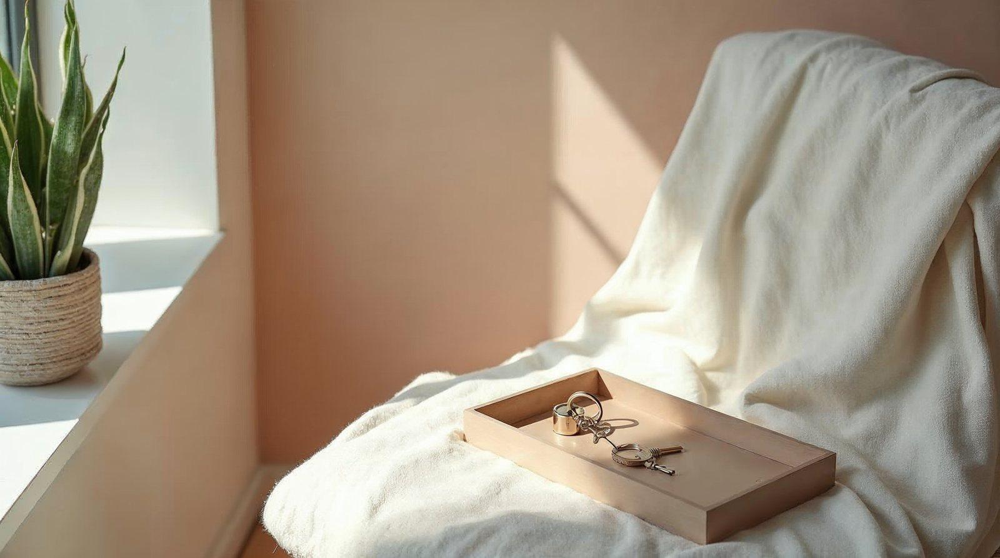
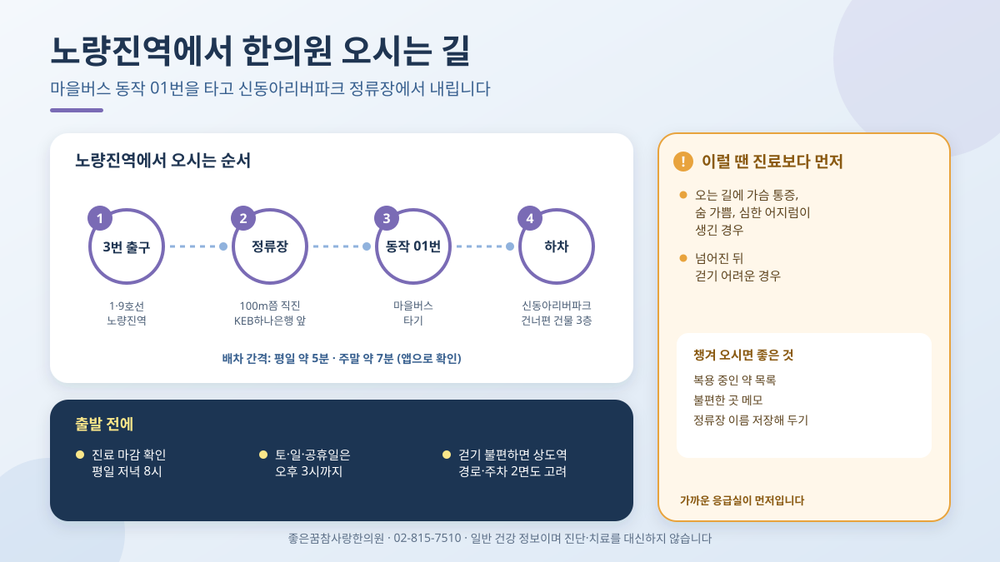

이종호 한의사 감수좋은꿈참사랑한의원 대표원장 (한의사 면허번호 19769)발행 2026-11-23 · 수정 2026-11-26
이 글의 차례
- 왜 마을버스 경로를 많이 이용하나요
- 오시는 순서
- 배차와 시간
- 처음 오시는 분은 어디에서 많이 헷갈리나요?
- 상도역에서 오는 길과는 무엇이 다른가요?
- 비 오거나 추운 날에는 무엇을 챙길까요?
- 몸이 불편한 날 마을버스는 어떻게 타면 좋을까요?
- 왜 이동하는 길에 허리와 목이 더 불편해질까요
- 버스를 기다리며 해 볼 수 있는 가벼운 동작
- 처음 몇 번은 같은 길로 오시길 권하는 이유
- 출발 시각은 어떻게 잡으면 좋을까요?
- 수험생과 직장인이 오가는 길에 들를 때
- 이동 중 이런 불편이 있는지 점검해 보세요
- 먼저 이렇게 여쭙니다
- 한의원에서 함께 살필 수 있는 경우
- 걷기가 많이 힘든 날은 어떻게 오면 좋을까요?
- 어르신이나 아이와 함께 버스로 오실 때
- 진료를 마치고 돌아가는 길에는
- 이동하는 동안의 불편은 이렇게 기록해 오세요
- 오시기 전에 챙겨 두면 좋은 것
- 이런 증상은 먼저 확인이 필요합니다
노량진역 3번 출구에서 약 100m 떨어진 정류장에서 동작01 마을버스를 타고 신동아리버파크 정류장에서 내리시면 됩니다. 노량진역에서 좋은꿈참사랑한의원까지는 마을버스를 이용하는 방법이 있습니다. 처음 오시는 분이 헷갈리지 않도록 순서대로 적습니다.
노량진역은 늘 붐빕니다. 학원 가방을 멘 수험생, 환승하러 바삐 걷는 직장인 사이에서 처음 오는 길을 찾다 보면, 허리가 아픈 날에는 그 몇 분도 길게 느껴지지요. 출구를 잘못 나와 다시 돌아가는 일이 생기면 몸도 마음도 더 지칩니다.
그래서 저는 오시는 길을 될 수 있는 대로 자세히 적어 두고 싶었습니다. 길에서 헤매는 시간이 줄면 그만큼 숨을 고르고 진료실에 들어오실 수 있고, 하고 싶은 이야기도 차분하게 꺼낼 수 있습니다.
왜 마을버스 경로를 많이 이용하나요
- 노량진역에서 한의원까지는 걸어서 오기에 거리가 있어, 허리나 무릎이 불편한 분은 마을버스가 덜 부담스럽습니다.
- 1·9호선 환승역이라 학원가를 오가는 수험생과 직장인이 이동 중에 들르기 편합니다.
- 마을버스에서 내리면 길 건너편 건물 3층이라 처음 오시는 분도 찾기 쉬운 편입니다.
오시는 순서
- 1·9호선 노량진역 3번 출구로 나옵니다.
- 100m쯤 직진하면 KEB하나은행 바로 앞에 마을버스 정류장이 있습니다.
- 동작 01번 마을버스를 탑니다.
- 신동아리버파크 정류장에서 내리면 건너편 건물 3층에 한의원이 보입니다.
배차와 시간
- 동작 01번 배차 간격은 평일 약 5분, 주말 약 7분입니다.
- 정확한 운행 시간은 버스 정보 앱으로 확인하는 편이 좋습니다.
- 진료는 평일 저녁 8시까지, 토·일·공휴일은 오후 3시까지입니다.
- 걷기가 많이 불편하면 택시나 자가용도 고려하세요(주차는 방문 전 전화로 확인).
처음 오시는 분은 어디에서 많이 헷갈리나요?
가장 먼저 헷갈리는 곳은 출구입니다. 노량진역은 1호선과 9호선이 만나는 역이라, 타고 오신 노선에 따라 걷는 통로가 다를 수 있습니다. 개찰구를 나오기 전에 안내판에서 3번 출구 방향을 먼저 확인해 두시면 지상에 올라와서 방향을 다시 찾는 수고가 줄어듭니다.
두 번째는 정류장입니다. 3번 출구로 나와 100m쯤 직진하면 KEB하나은행이 보이고, 그 바로 앞이 마을버스 정류장입니다. 은행 간판을 기준으로 삼으시면 찾기 쉽습니다.
세 번째는 내릴 곳입니다. 처음 타는 버스에서는 몇 정거장을 가야 하는지 감이 잘 오지 않지요. 버스 정보 앱이나 지도 앱에 신동아리버파크 정류장을 미리 저장해 두고, 안내 방송에 귀를 기울여 주세요. 내리시면 길 건너편 건물 3층이 한의원입니다.
상도역에서 오는 길과는 무엇이 다른가요?
7호선을 타고 오신다면 상도역 3번 출구에서 걸어오시는 길도 있습니다. 출구에서 약 200m 직진한 뒤 오거리에서 상도노빌리티 상가를 오른쪽에 끼고 우회전해 약 200m 올라오시면 됩니다. 다만 뒤쪽 200m가 오르막이라 무릎이나 허리가 불편한 날에는 부담이 될 수 있습니다.
1호선이나 9호선을 타고 오신다면 노량진역에서 마을버스를 타는 길이 걷는 거리가 짧습니다. 어느 길이 편한지는 타고 오시는 노선과 그날 몸 상태에 따라 고르시면 됩니다. 처음에는 두 길 중 하나만 정해 두고, 익숙해지면 다른 길도 써 보세요.
비 오거나 추운 날에는 무엇을 챙길까요?
비 오는 날에는 정류장 바닥과 버스 계단이 미끄럽습니다. 밑창이 미끄럽지 않은 신발을 신고, 우산은 손잡이를 잡을 손과 반대편에 드세요. 버스에서 내릴 때는 우산을 펴느라 서두르지 말고, 먼저 두 발로 단단히 선 뒤에 펴셔도 늦지 않습니다.
추운 날에는 몸이 움츠러들면서 목과 어깨가 더 굳습니다. 목도리로 목 뒤를 감싸고, 정류장에서 기다릴 때 발을 가볍게 움직여 주세요. 몸이 따뜻해야 근육도 덜 긴장합니다. 날씨가 궂은 날은 이동 시간이 늘어날 수 있으니 평소보다 10분쯤 일찍 출발해 주세요.
몸이 불편한 날 마을버스는 어떻게 타면 좋을까요?
허리나 무릎이 아픈 날에는 버스에 오르고 내리는 계단 한두 칸도 부담이 됩니다. 손잡이를 먼저 잡고, 덜 아픈 다리부터 올리고 아픈 다리를 뒤따라 올려 보세요. 내릴 때는 반대로 아픈 다리를 먼저 내리고 덜 아픈 다리를 뒤에 내리면 무릎에 실리는 무게가 줄어듭니다.
서서 가야 한다면 발을 어깨너비로 벌리고 무릎을 아주 살짝 굽혀 보세요. 무릎을 쭉 펴고 서 있으면 버스가 흔들릴 때마다 허리가 그 충격을 그대로 받습니다. 한 손은 손잡이를 잡고, 가방은 한쪽 어깨에만 걸기보다 앞으로 메거나 양쪽으로 나눠 드는 것이 좋습니다.
내릴 정류장이 가까워지면 버스가 완전히 멈춘 뒤에 일어나세요. 미리 일어나 문 앞에 서 있다가 버스가 서는 순간 몸이 앞으로 쏠리면, 아픈 허리나 목이 갑자기 긴장할 수 있습니다.
왜 이동하는 길에 허리와 목이 더 불편해질까요
흔들리는 버스 안에서는 몸이 넘어지지 않으려고 쉬지 않고 균형을 잡습니다. 허리와 엉덩이, 종아리 근육이 계속 작은 힘을 쓰는 셈이지요. 그래서 짧은 거리라도 서서 가면 내릴 때쯤 허리가 묵직해지는 분이 많습니다.
목도 비슷합니다. 버스나 지하철에서 휴대폰을 내려다보면 고개가 앞으로 숙여지고, 그 무게를 목 뒤와 어깨 근육이 붙잡고 있어야 합니다. 예를 들어 학원에서 하루 종일 고개를 숙이고 공부한 뒤 집에 가는 길에도 휴대폰을 보는 경우, 저녁이면 뒷목이 뻣뻣하게 당기기 쉽습니다.
여기에 무거운 가방까지 한쪽 어깨에 걸면 몸은 한쪽으로 기울어진 채 균형을 잡게 됩니다. 이동하는 시간 자체가 몸에게는 작은 노동이라는 점을 기억해 두시면, 진료실에서 불편을 설명할 때도 도움이 됩니다.
버스를 기다리며 해 볼 수 있는 가벼운 동작
정류장에서 기다리는 몇 분도 몸을 풀 기회가 됩니다. 크게 움직일 필요는 없습니다. 주변 사람에게 방해가 되지 않을 만큼만 해 보세요.
- 어깨를 귀 쪽으로 천천히 올렸다가 툭 내리기를 다섯 번
- 턱을 살짝 당겨 뒷목을 길게 늘인 채 열까지 세기
- 발뒤꿈치를 들었다 내리며 종아리 풀어 주기
- 숨을 코로 천천히 들이쉬고 입으로 길게 내쉬기를 세 번
아픈 곳이 더 당기거나 저린 느낌이 생기면 바로 멈추세요. 이 동작들은 굳은 몸을 살짝 깨우는 정도로만 하시면 됩니다.
처음 몇 번은 같은 길로 오시길 권하는 이유
낯선 길은 생각보다 많은 신경을 씁니다. 출구를 찾고, 정류장을 찾고, 내릴 곳을 놓치지 않으려고 계속 긴장하게 되지요. 몸이 불편한 날에는 이런 긴장만으로도 어깨가 올라가고 숨이 얕아집니다.
처음 몇 번은 같은 길로 오시면 몸이 길을 기억합니다. 길이 익숙해지면 이동하는 동안 마음이 한결 편해지고, 진료실에 들어오실 때 표정도 달라집니다. 저는 그 편안함도 회복의 한 부분이라고 생각합니다.
출발 시각은 어떻게 잡으면 좋을까요?
처음 오시는 날에는 접수하고, 이야기를 나누고, 진맥과 필요한 진찰을 거치는 데 시간이 걸립니다. 그래서 마감에 딱 맞춰 도착하기보다 넉넉히 일찍 도착하도록 출발 시각을 잡아 주세요. 평일은 저녁 8시, 토·일·공휴일은 오후 3시에 진료가 끝납니다.
평일 퇴근길이라면 노량진역에 도착하는 시각을 기준으로 거꾸로 계산해 보세요. 출구를 찾고 정류장까지 걷는 시간, 버스를 기다리는 시간, 타고 가는 시간을 더하면 됩니다. 마감 가까이 도착할 것 같으면 출발 전에 전화(02-815-7510)로 접수 가능 여부를 여쭤 보세요.
수험생과 직장인이 오가는 길에 들를 때
노량진 학원가에서 공부하는 수험생은 하루 대부분을 앉아서 보냅니다. 오래 앉아 있으면 허리와 골반, 목과 어깨가 굳기 쉽고, 시험이 다가오면 잠과 소화까지 흔들리곤 합니다. 수업 사이 시간이나 공부를 마친 저녁에 들르실 수 있도록 오시는 길을 미리 익혀 두세요.
공부하는 시간을 아끼고 싶은 마음은 잘 압니다. 하지만 몸이 버텨 주어야 공부도 이어 갈 수 있으니, 불편이 쌓이기 전에 한 번쯤 몸 상태를 점검해 보시길 권합니다. 수업 시간표를 가져오시면 그 일정에 맞춰 다음 방문을 함께 정할 수 있습니다.
직장인도 마찬가지입니다. 환승하는 길에 잠깐 내려 들르실 수 있다면, 따로 시간을 내는 부담이 줄어듭니다. 다만 퇴근 시간대에는 역과 버스가 붐빌 수 있으니 이동 시간을 조금 더 여유 있게 잡아 주세요. 하루 종일 일하고 붐비는 버스까지 타고 오시느라 지친 몸이라면, 진료실에 들어오셔서 먼저 편히 앉아 숨부터 고르셔도 괜찮습니다.
이동 중 이런 불편이 있는지 점검해 보세요
아래 가운데 해당하는 것이 있다면 진료 때 함께 말씀해 주세요.
- 버스에서 10분만 서 있어도 허리가 묵직해진다
- 계단을 내려갈 때 무릎 앞쪽이 시큰하다
- 휴대폰을 보다 고개를 들면 뒷목이 뻣뻣하다
- 가방을 메는 쪽 어깨만 유난히 뭉친다
- 오래 이동한 날은 잠이 얕다
한두 가지라면 이동하는 자세를 바꿔 보는 것만으로도 덜해질 수 있습니다. 서너 가지가 겹치거나 몇 주째 이어진다면, 이동 시간만의 문제가 아니라 하루 전체의 자세와 잠, 피로가 함께 얽혀 있을 수 있어 진료실에서 차근차근 살펴보겠습니다.

먼저 이렇게 여쭙니다
처음 오시면 진료실에서 이런 것부터 여쭙습니다.
- 지금 가장 불편한 곳과 언제부터 그랬는지
- 오래 서 있거나 걸을 때는 어떤지
- 잠·소화·대소변은 어떤지
한의원에서 함께 살필 수 있는 경우
- 시험 준비로 학원가를 오가는 수험생이 오래 앉아 목·허리가 불편한 경우 자세를 함께 살핍니다.
- 이동이 길어 지친 날 잠이 얕아지는 경우 생활 리듬을 함께 살핍니다.
- 버스를 오래 서서 타면 허리나 다리가 불편한 경우 서 있는 자세와 다리의 피로를 함께 살핍니다.
처음 오시면 접수한 뒤 원장이 모든 분께 맥부터 짚으며 불편한 곳과 생활을 여쭙습니다. 필요하면 혀와 배를 살피거나 초음파로 확인하고, 상태에 맞는 치료와 다음 방문 안내로 이어집니다. 다시 오시면 지난번 이야기부터 이어서 여쭙습니다.
서둘러 오시느라 숨이 찬 채로 들어오셨다면 잠시 앉아 숨을 고른 뒤에 맥을 짚습니다. 급하게 걸어온 직후의 맥은 평소와 다르게 느껴질 수 있기 때문입니다. 그러니 조금 늦을 것 같아도 뛰지 마시고, 전화로 알려 주신 뒤 천천히 오세요.
맥을 짚은 뒤에는 불편한 동작을 직접 확인합니다. 서고, 걷고, 앉고, 고개를 돌리는 동작에서 어디가 어떻게 불편한지 보고, 통증 부위를 눈으로 확인할 필요가 있다고 판단되면 초음파로 살피기도 합니다. 그 뒤 오늘 할 치료와 집에서 지켜볼 점을 말씀드립니다.
걷기가 많이 힘든 날은 어떻게 오면 좋을까요?
통증이 심해 버스 계단을 오르내리기도 힘든 날이 있습니다. 그런 날은 무리해서 대중교통을 고집하지 않으셔도 됩니다. 택시를 타거나 가족의 차를 이용하는 것도 방법입니다. 차로 오실 때 주차 가능 여부와 위치는 방문 전 전화(02-815-7510)로 확인해 주세요.
택시를 타실 때는 기사님께 신동아리버파크 쪽으로 가 달라고 말씀하시면 됩니다. 차에 타고 내릴 때는 엉덩이부터 먼저 앉은 뒤 두 다리를 함께 들여놓고, 내릴 때도 두 다리를 먼저 밖으로 내린 다음 일어나 보세요. 허리를 비틀며 타고 내리는 것보다 부담이 덜합니다.
어르신이나 아이와 함께 버스로 오실 때
부모님을 모시고 오신다면 버스에 오르실 때 뒤에서, 내리실 때 앞에서 부축해 드리세요. 어르신은 버스가 출발하거나 멈출 때 몸이 쏠리기 쉬우니, 될 수 있으면 자리에 앉으신 것을 확인한 뒤 손잡이를 잡으시면 좋습니다.
아이와 함께라면 정류장 이름을 아이와 같이 확인해 보세요. 내릴 곳을 함께 기다리면 아이도 덜 지루해하고, 다음에 올 때 길을 기억하기도 쉽습니다. 함께 오는 분이 많을수록 진료 시간도 늘어나니 출발을 조금 앞당겨 주세요.
진료를 마치고 돌아가는 길에는
침을 맞은 날에는 과음과 무리한 운동을 피해 주세요. 진료 뒤 몸이 나른하게 느껴질 수 있으니, 돌아가는 버스에서는 될 수 있으면 앉아서 가시고 휴대폰보다는 창밖을 보며 쉬어 보세요.
집에 도착하면 따뜻하게 씻고 일찍 쉬시는 것이 좋습니다. 다음 날 아침 불편이 어떻게 달라졌는지 한 줄 적어 두시면, 다음 진료 때 그 메모부터 이어서 살피겠습니다.
이동하는 동안의 불편은 이렇게 기록해 오세요
어느 구간에서 불편했는지를 적어 오시면 도움이 됩니다. 예를 들어 "역 계단 내려갈 때 오른쪽 무릎, 버스에서 서 있을 때 허리 아래쪽"처럼 장소와 부위를 짝지어 적으면 됩니다.
평소 출퇴근이나 통학 시간이 얼마나 되는지, 그중 서서 가는 시간이 얼마인지도 함께 적어 주세요. 하루에 몸이 견디는 시간을 알면 집에서 해 볼 생활 요령도 그분의 하루에 맞춰 말씀드릴 수 있습니다.
오시기 전에 챙겨 두면 좋은 것
- 지도 앱이나 버스 정보 앱에 신동아리버파크 정류장 저장해 두기
- 진료 마감(평일 저녁 8시, 주말·공휴일 오후 3시)을 고려한 출발 시각
- 처음 방문이라면 복용 중인 약 목록과 불편한 곳 메모
- 버스에서 오래 서 있기 힘들다면 그 점도 진료 때 말씀해 주세요
이런 증상은 먼저 확인이 필요합니다
- 오는 길에 가슴 통증, 숨 가쁨, 심한 어지럼이 생긴 경우
- 넘어진 뒤 걷기 어려운 경우
이런 신호가 있으면 한의원보다 가까운 병원이나 응급실을 먼저 찾으세요.

여쭙는 것
- 지금 가장 불편한 곳과 언제부터 그랬는지
- 오래 서 있거나 걸을 때는 어떤지
- 잠·소화·대소변은 어떤지
한의원에서 함께 살필 것
- 시험 준비로 학원가를 오가는 수험생이 오래 앉아 목·허리가 불편한 경우 자세를 함께…
- 이동이 길어 지친 날 잠이 얕아지는 경우 생활 리듬을 함께 살핍니다.
- 버스를 오래 서서 타면 허리나 다리가 불편한 경우 서 있는 자세와 다리의 피로를 함…
먼저 확인이 필요한 신호
- 오는 길에 가슴 통증, 숨 가쁨, 심한 어지럼이 생긴 경우
- 넘어진 뒤 걷기 어려운 경우
한눈에 보는 표
| 구분 | 핵심 |
|---|---|
| 여쭙는 것 | 지금 가장 불편한 곳과 언제부터 그랬는지 오래 서 있거나 걸을 때는 어떤지 |
| 한의원에서 함께 살필 것 | 시험 준비로 학원가를 오가는 수험생이 오래 앉아 목·허리가 불편한 경우 자세를 함께 살핍니다. 이동이 길어 지친 날 잠이 얕아지는 경우 생활 리듬을 함께 살핍니다. |
| 먼저 확인이 필요한 신호 | 오는 길에 가슴 통증, 숨 가쁨, 심한 어지럼이 생긴 경우 넘어진 뒤 걷기 어려운 경우 |
자주 묻는 질문
노량진역에서 걸어서도 갈 수 있나요?
마을버스 이용 경로를 안내하고 있으며, 걸어서 가는 경우의 소요 시간은 개인마다 달라 길 안내 앱으로 확인하시길 권합니다.
어느 정류장에서 내리나요?
신동아리버파크 정류장입니다. 내리면 건너편 3층에 한의원이 보입니다.
마을버스 번호가 무엇인가요?
동작 01번입니다.
밤에도 마을버스로 올 수 있나요?
운행 시간은 버스 정보 앱으로 확인하시고, 평일 진료는 저녁 8시까지이니 마감 전에 도착하도록 출발 시각을 잡아 주세요.
길을 잃으면 어떻게 하나요?
전화(02-815-7510)로 지금 보이는 건물이나 정류장 이름을 말씀해 주시면 길을 함께 찾아 드립니다.
좋은꿈참사랑한의원은 재진 때 지난번 이야기부터 이어서 여쭙니다. 진료시간과 예약은 오시는 길에서 확인하세요.
어디서 상담받을 수 있나요?
좋은꿈참사랑한의원은 서울 동작구 만양로2길 2 신성빌딩 3층·5층(서울 동작구 상도동, 7호선 상도역 3번 출구 근처)에 있습니다. 한의사 3명(이종호 대표원장, 조영기 수석진료원장, 정원영 진료원장)이 진료합니다. 진료시간은 평일 09:30~20:00(점심 13:00~14:00), 토·일·공휴일 09:30~15:00이며, 방문 전 전화로 확인을 권합니다. 예약은 네이버 예약, 카카오톡 상담, 전화 02-815-7510로 받습니다.
이 글은 일반적인 건강 정보이며 개인의 진단이나 치료를 대신하지 않습니다. 증상이 있거나 복용 중인 약이 있다면 진료를 통해 확인하세요. 치료 효과는 개인마다 다를 수 있습니다.
작성 기준: 일반적으로 알려져 있는 건강 정보를 참고해 정리했습니다(대표원장 감수). 증상 기록은 1~2주 동안 하루 1회, 비슷한 시간에 적어 오시면 지난 상태와 비교하기 쉽습니다.